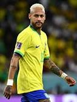
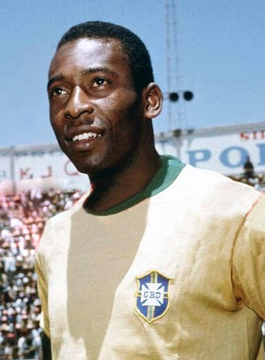

A Seleção Brasileira de Futebol, administrada pela CBF, uma associação privada, representa o Brasil nas competições de futebol da CONMEBOL e FIFA.
Formada em 1915 e considerada um dos maiores símbolos do país, é chamada de "Seleção", "Seleção Canarinho", "Verde-Amarela", além de outras alcunhas. É a seleção mais bem-sucedida da história do futebol mundial, sendo a recordista em conquistas em Copas do Mundo, com cinco títulos invictos (1958, 1962, 1970, 1994 e 2002) e quatro títulos da Copa das Confederações FIFA (1997, 2005, 2009 e 2013).
Dentre outras conquistas importantes, a seleção detém nove títulos da Copa América (1919, 1922, 1949, 1989, 1997, 1999, 2004, 2007 e 2019). Conquistou ainda quatro Copa das Confederações FIFA (1997, 2005, 2009 e 2013), competição na qual também é a maior vencedora da história. Nos Jogos Olímpicos de 2016, sediados no Rio de Janeiro, conquistou pela primeira vez a medalha de ouro, vencendo a seleção alemã nos pênaltis. O feito se repetiu em 2021, no Japão quanto conquistou a medalha de ouro no futebol pela segunda vez. Em ambas oportunidades, a Seleção Brasileira conquistou as medalhas de ouro de maneira invicta.
Maiores Artilheiros da Seleção
Neymar

Neymar Júnior com a camisa da seleção brasileira
Neymar da Silva Santos Júnior (Mogi das Cruzes, 5 de fevereiro de 1992) é um futebolista brasileiro que atua como atacante. Atualmente joga pelo Al-Hilal e pela Seleção Brasileira. É considerado o principal futebolista brasileiro da atualidade e um dos melhores do mundo, sendo o maior artilheiro da Seleção Brasileira.
Pelé

Pelé com a camisa da seleção brasileira
Edson Arantes do Nascimento (Três Corações, 23 de outubro de 1940 – São Paulo, 29 de dezembro de 2022), mais conhecido como Pelé, foi um futebolista brasileiro que atuou como atacante. Descrito como o "Rei do Futebol", é amplamente considerado como o maior atleta de todos os tempos. Em 2000, foi eleito Jogador do Século pela Federação Internacional de História e Estatísticas do Futebol (IFFHS) e foi um dos dois vencedores conjuntos do prêmio Melhor Jogador do Século da FIFA. Nesse mesmo ano, Pelé foi eleito Atleta do Século pelo Comitê Olímpico Internacional. De acordo com a IFFHS, é o quinto maior goleador da história do futebol em jogos oficiais, tendo marcado 767 gols em 812 partidas. No total foram 1283 gols em 1363 jogos (incluindo amistosos não-oficiais), um recorde mundial do Guinness. Durante sua carreira, chegou a ser durante um período o atleta mais bem pago do mundo.
Ronaldo
Ronaldo "Fenômeno" AposentadoRonaldo Luís Nazário de Lima (Itaguaí, 18 de setembro de 1976), popularmente conhecido como Ronaldo Fenômeno, é um empresário e ex-futebolista brasileiro que atuava como centroavante, amplamente reconhecido como um dos melhores de todos os tempos. Atualmente é proprietário e presidente do Real Valladolid, da Espanha, que comprou em 2021, além de sócio-proprietário do Cruzeiro, do Brasil.